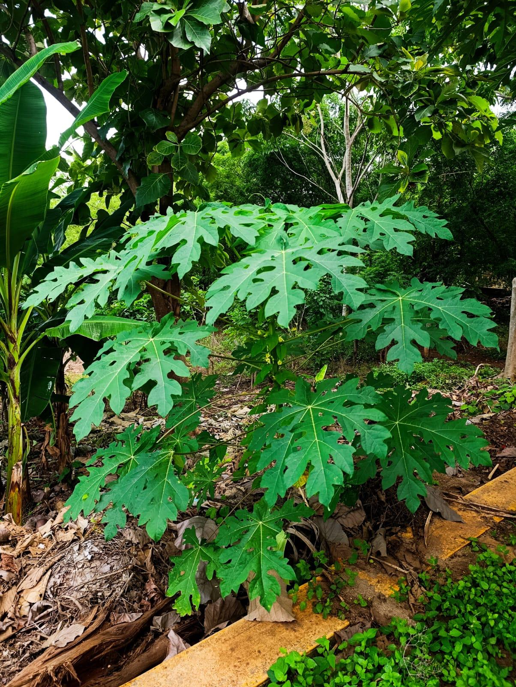
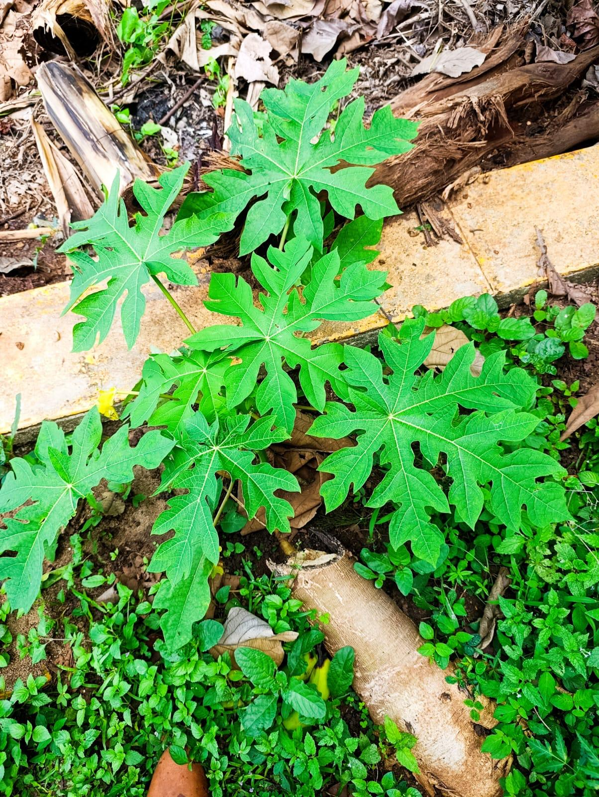
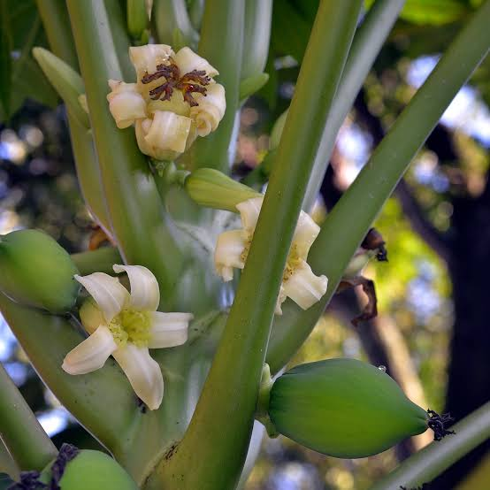
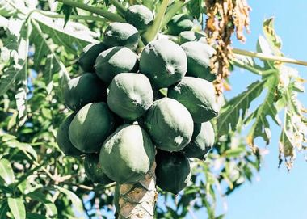

Papaya

Galería de la Papaya
📸 Galería de la Papaya




Nombre científico
Carica papaya L
Familia
Caricaceae
Descripción
La papaya es una planta de tallo recto y generalmente sin ramas, con hojas grandes y palmeadas en la parte superior , Las hojas de la papaya son grandes, simples y palmeadas, con varios lóbulos profundos. Son de color verde, tienen un pecíolo largo y se encuentran agrupadas en la parte superior de la planta. . Su fruto es ovalado o alargado, de cáscara verde que cambia a amarillo o anaranjado al madurar, con pulpa suave, jugosa y dulce y numerosas semillas negras en su interior.
Usos
La papaya se utiliza principalmente como alimento, ya que su fruto se consume fresco, en licuados, ensaladas y aguas. En la medicina tradicional, se ha utilizado para ayudar a la digestión y como remedio casero para algunos malestares estomacales.
📍 Lugar donde fue encontrada
Municipio de Huehuetan, Chiapas.